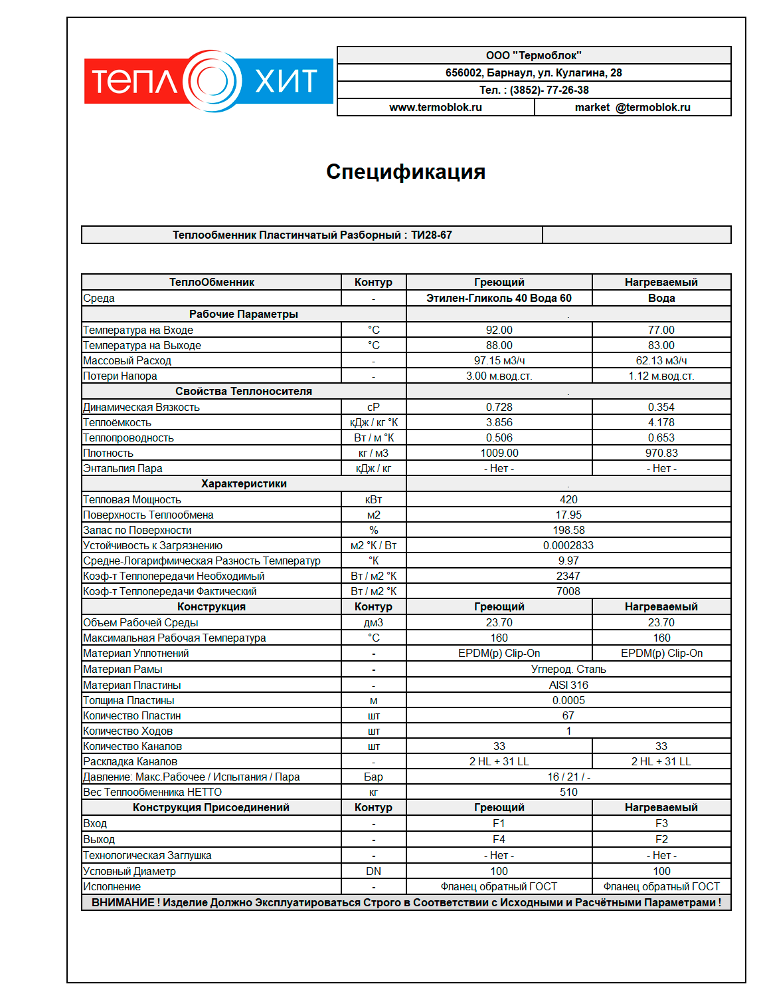
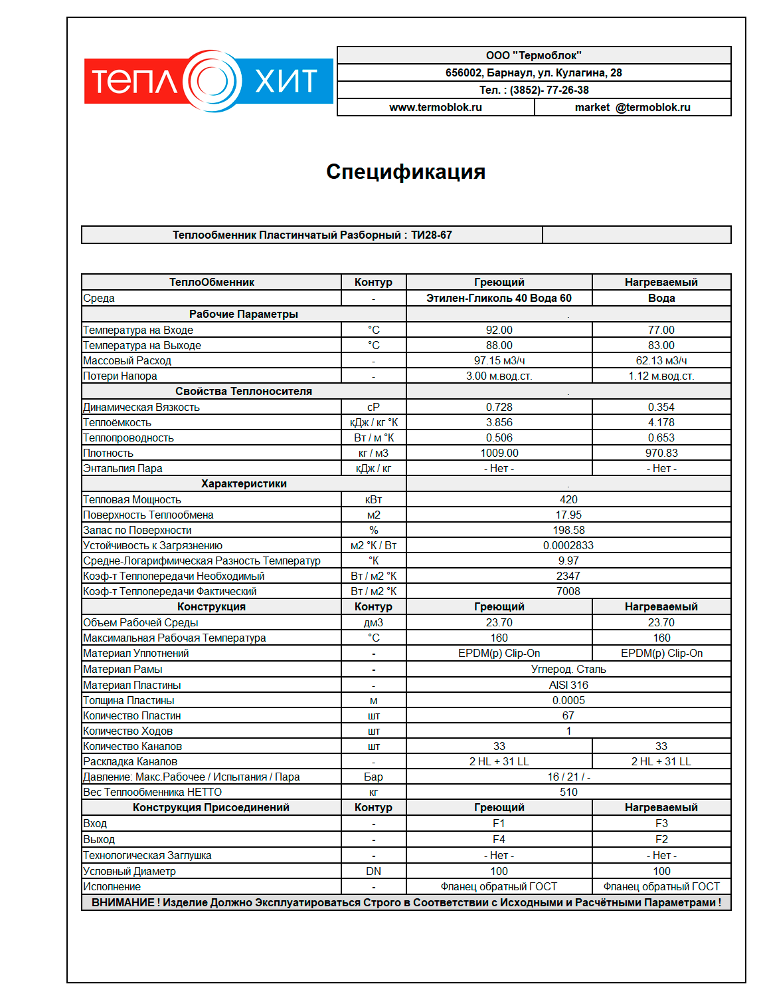
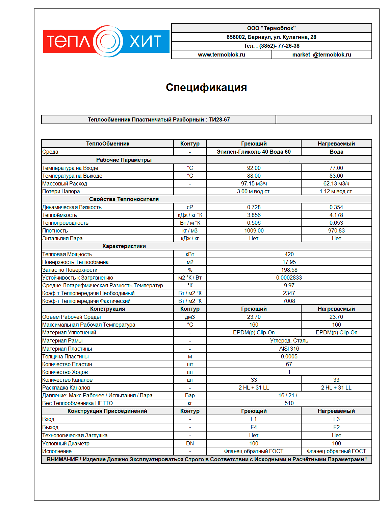

Пропилен-гликоль и этилен-гликоль часто применяются в теплообменниках как жидкая среда по нагреваемому контуру в системах вентиляции и снеготаяния. Также гликолевые жидкости могут использоваться и как греющая среда (другими словами будет происходить охлаждение гликоля водой, которая циркулирует по нагреваемому контуру).
Теплообменники гликоль вода часто характеризуются большими показателями расходов по контурам при небольшой дельте температур жидкостей учавствующих в теплообмене. В системах, где жидкость не должна успеть замерзнуть, необходимо обеспечивать постоянную циркуляцию и подогревать ее через теплообменный аппарат.
Пластинчатый теплообменник для гликоля всегда расчитывается индивидуально. Помимо того, что гликолевые жидкости могут иметь разную концентрацию (40%, 50%, 60%), технологический процесс, в котором будет учавствать теплообменник может быть сложным и некоторые "переменные" в данном процессе могут быть неизвестны. Наши специалисты помогут Вам разобраться с тем какой теплообменник для гликоля необходим. Сферы применения очень обширны.
Для обеспечеяния таяния снега на придомовой территории, крыльцах, площадях.
Теплообменники гликоль-вода для снеготаянияКонтура в пластинчатых теплообменниках изолированы друг от друга, это позволяет использовать гликоль и стоить на базе них системы теплых полов для отопления больших площадей.
Теплообменники гликоль-вода для теплого полаТеплообменные аппараты для гликоля часто применяются в пищевой отрасли, в хладогенных установках разного назначения. Расчёт теплообменника в данном случае должен проводить компетентный специалист.
Запросить расчёт на теплообменникПластинчатый теплообменник для гликоля всегда расчитывается индивидуально. Помимо того, что гликолевые жидкости могут иметь разную концентрацию (40%, 50%, 60%), технологический процесс, в котором будет учавствать теплообменник может быть сложным и некоторые "переменные" в данном процессе могут быть неизвестны. Наши специалисты помогут Вам разобраться с тем какой теплообменник для гликоля необходим.
Пропилен- гликоль в данном теплообменнике циркулирует по нагреваемому контуру. Подогрев пропиленгликоля с 10 °C до 20 °C идет через теплообменник 200 кВт.

В данном случае этилен- гликоль циркулирует по греющему контуру, его охлаждают с 92 °C до 88 °C водой. Охлажение этиленгликоля осуществляется через теплообменник мощностью 420 кВт.